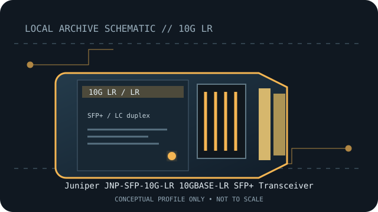

[ MODEL-SPECIFIC NETWORK HARDWARE RECORD ]
Juniper JNP-SFP-10G-LR 10GBASE-LR SFP+ Transceiver
Juniper-qualified 1310nm 10km single-mode 10GbE SFP+ optic. Exact PID, host qualification and optical channel specifications should be checked before deployment.

IDENTIFICATION: Match the module label, vendor part number and revision to the manufacturer's documentation. Nominal link rate and maximum reach are specifications, not measured throughput or a guarantee for every installed channel.
Model-specific specifications and compatibility
| Subcategory | SFP transceivers: optical and copper |
|---|---|
| Exact product/model | Juniper JNP-SFP-10G-LR 10GBASE-LR SFP+ Transceiver |
| Form factor | SFP+, hot-pluggable 10GbE optical transceiver; Juniper PID JNP-SFP-10G-LR. |
| Optical interface | 10GBASE-LR at 1310nm over single-mode fiber. |
| Nominal rate (not measured) | 10Gb/s nominal Ethernet link rate. |
| Wavelength and reach | Up to 10km on single-mode fiber, according to the specified LR channel. |
| Connector and fiber type | Duplex LC; 1310nm single-mode fiber (SMF). |
| Host coding and compatibility caveat | Juniper qualification depends on the exact chassis/interface and Junos release. Verify JNP-SFP-10G-LR in Juniper’s HCT and official qualified-optics documentation. Correct form factor and IEEE-like link class alone do not guarantee the host accepts or supports this coded PID. |
| Variant / deployment caveat | Pair LR with a compatible LR optic and SMF channel; do not mate directly to SR multimode optics. Keep fiber loss, connector cleanliness and host qualification within documented limits. |
| Measured throughput | No bench result is claimed. Actual payload throughput depends on the host, link partner, protocol overhead and test method. |
Host qualification and installation notes
Juniper qualification depends on the exact chassis/interface and Junos release. Verify JNP-SFP-10G-LR in Juniper’s HCT and official qualified-optics documentation. Correct form factor and IEEE-like link class alone do not guarantee the host accepts or supports this coded PID.
Pair LR with a compatible LR optic and SMF channel; do not mate directly to SR multimode optics. Keep fiber loss, connector cleanliness and host qualification within documented limits.
Check both endpoint modules, fiber grade, polarity, connector cleanliness and host port configuration. Verify the exact transceiver PID and revision against the current manufacturer compatibility source before placing the link in service.
Archival, ESD and fiber-safety notes
Record the exact PID, hardware revision, host port, firmware/software release and available digital optical diagnostics. Store the module in ESD-safe packaging with dust caps fitted. Never look into an active fiber or transceiver aperture.
Manufacturer sources
- Juniper 10G/1G Qualified OpticsJuniper qualified product-family page for 10G optics.
- Juniper Optic Modules Data SheetOfficial Juniper technical data for optical module specifications.
- Juniper Hardware Compatibility ToolSearch the exact PID against chassis, interface and Junos release.
Manufacturer compatibility varies by host, release, module coding and product revision. Consult the exact product source and current host qualification before use.